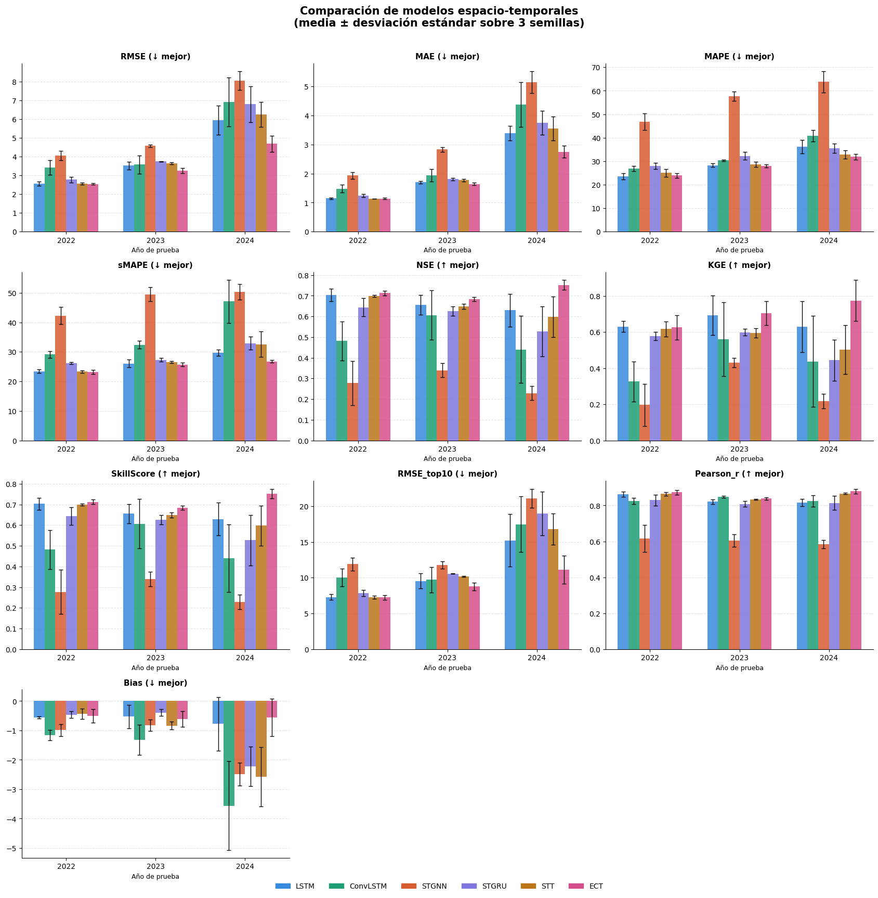
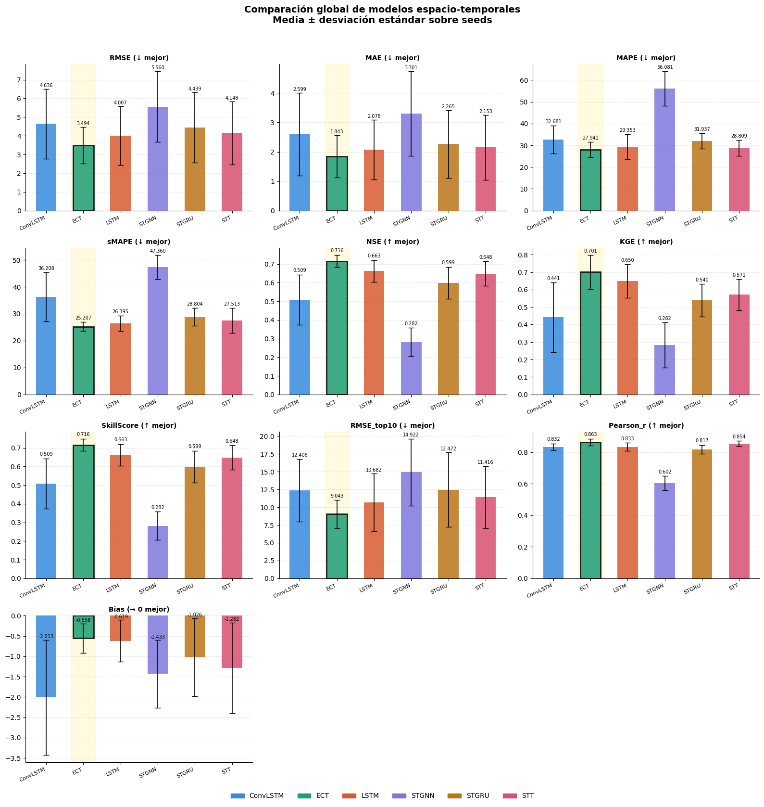
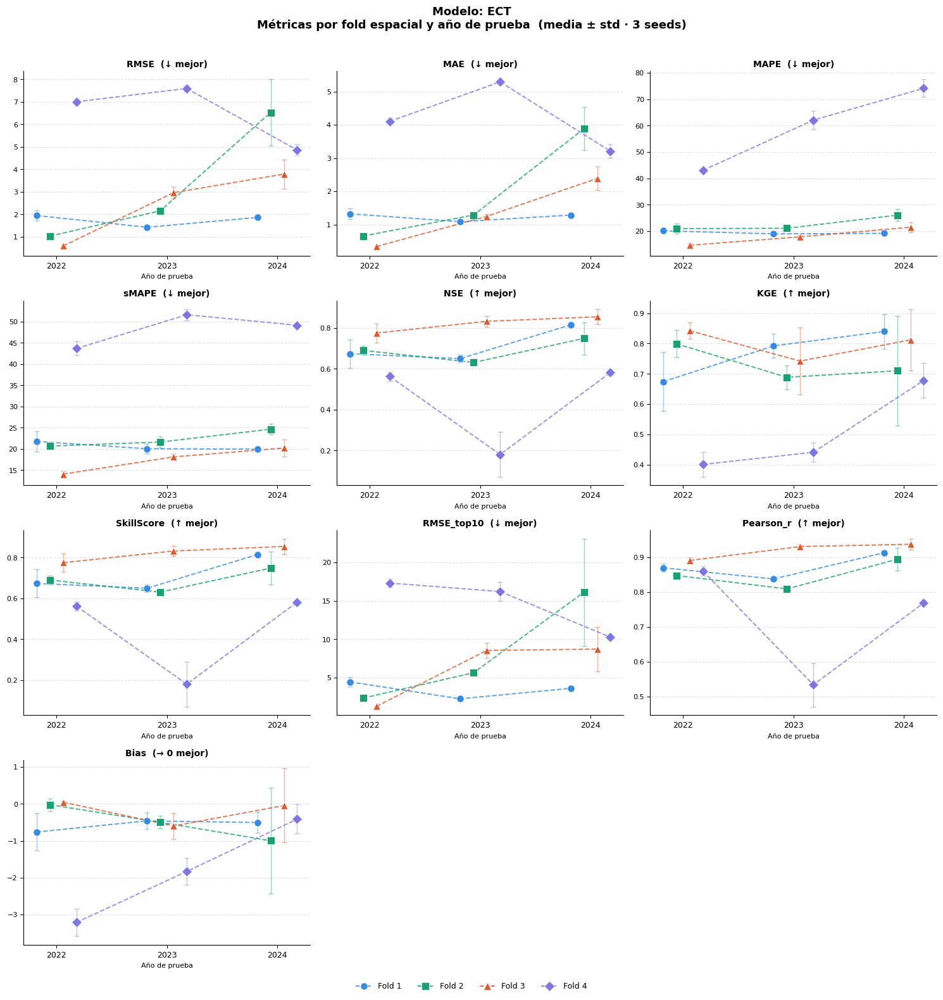
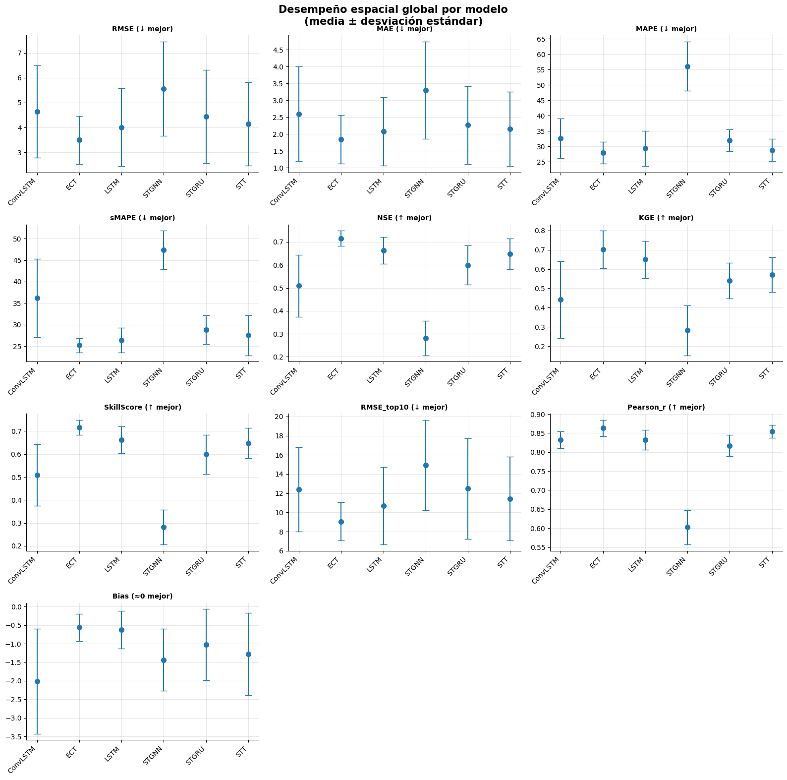
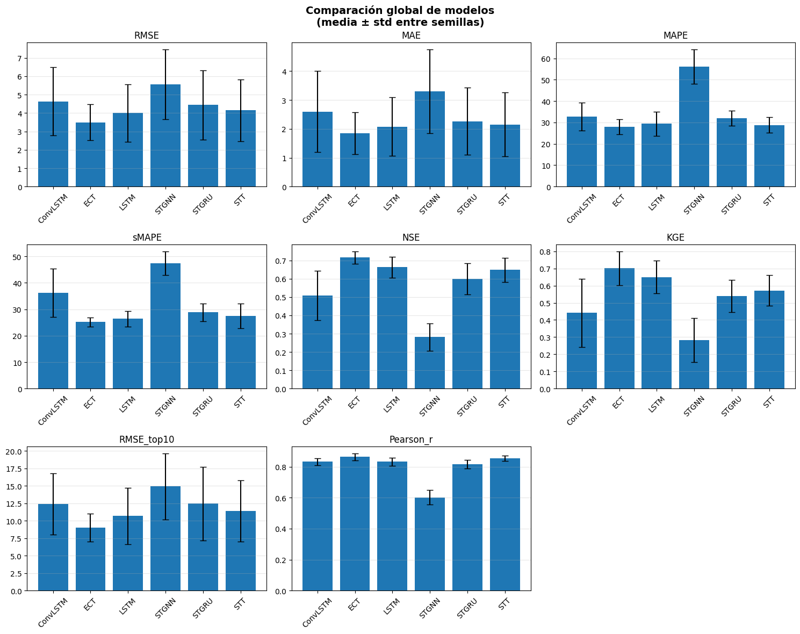
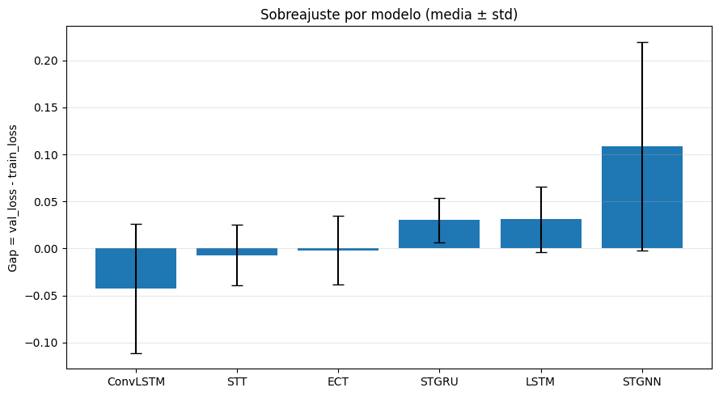

13. Comparación Final#
13.1. LibrerÍas#
import os
import pandas as pd
from scipy import stats
import numpy as np
from scipy.stats import shapiro
import pandas as pd
from statsmodels.stats.multicomp import pairwise_tukeyhsd
from scipy.stats import levene
from itertools import combinations
13.2. Cargar Resultados#
Inicialmente se cargan los resultados de todos los modelos para relaizar la comparación final.
BASE_DIR = "/home/moon/DEEP/PF/PF_DG/MODELOS"
MODELOS = ["LSTM_CV", "ConvLSTM_CV", "STGNN_CV", "STGRU_CV", "STT_CV", "ECT_CV"]
METRICS_BASE = ["RMSE", "MAE", "MAPE", "sMAPE", "NSE", "KGE",
"SkillScore", "RMSE_top10", "Pearson_r", "Bias"]
def load_metrics(model_path, model_name):
all_files = [f for f in os.listdir(model_path) if f.endswith(".csv")]
results_files = [f for f in all_files
if f.lower().endswith("_results.csv")
and "spatial" not in f.lower()
and "fold" not in f.lower()]
spatial_files = [f for f in all_files
if "spatial" in f.lower() and f.lower().endswith(".csv")]
result = {}
if results_files:
fp = os.path.join(model_path, results_files[0])
df = pd.read_csv(fp)
meta_cols = [c for c in df.columns if not c.startswith(("real_", "log_"))]
real_cols = [c for c in df.columns if c.startswith("real_")]
if real_cols:
result["global"] = df[meta_cols + real_cols].copy()
result["global"]["Model"] = model_name
if spatial_files:
fp = os.path.join(model_path, spatial_files[0])
df = pd.read_csv(fp)
metric_cols = [c for c in df.columns if c in METRICS_BASE]
other_cols = [c for c in df.columns if c not in METRICS_BASE]
if metric_cols:
result["spatial"] = df[other_cols + metric_cols].copy()
result["spatial"]["Model"] = model_name
return result
global_list = []
spatial_list = []
for model in MODELOS:
model_path = os.path.join(BASE_DIR, model)
result = load_metrics(model_path, model)
if "global" in result:
global_list.append(result["global"])
if "spatial" in result:
spatial_list.append(result["spatial"])
metrics_global_df = pd.concat(global_list, ignore_index=True) if global_list else pd.DataFrame()
metrics_spatial_df = pd.concat(spatial_list, ignore_index=True) if spatial_list else pd.DataFrame()
for df in [metrics_global_df, metrics_spatial_df]:
if not df.empty and "Model" in df.columns:
cols = ["Model"] + [c for c in df.columns if c != "Model"]
df.drop(columns=[c for c in df.columns if c not in cols], inplace=False)
metrics_global_df = metrics_global_df[["Model"] + [c for c in metrics_global_df.columns if c != "Model"]] if not metrics_global_df.empty else metrics_global_df
metrics_df = metrics_global_df
BASE_DIR = "/home/moon/DEEP/PF/PF_DG/MODELOS"
MODELOS = ["LSTM_CV", "ConvLSTM_CV", "STGNN_CV", "STGRU_CV", "STT_CV", "ECT_CV"]
METRICS_BASE = ["RMSE", "MAE", "MAPE", "sMAPE", "NSE", "KGE",
"SkillScore", "RMSE_top10", "Pearson_r", "Bias"]
def load_metrics(model_path, model_name):
all_files = [f for f in os.listdir(model_path) if f.endswith(".csv")]
results_files = [f for f in all_files
if f.lower().endswith("_results.csv")
and "spatial" not in f.lower()
and "fold" not in f.lower()]
spatial_files = [f for f in all_files
if "spatial" in f.lower() and f.lower().endswith(".csv")]
result = {}
if results_files:
fp = os.path.join(model_path, results_files[0])
df = pd.read_csv(fp)
meta_cols = [c for c in df.columns if not c.startswith(("real_", "log_"))]
real_cols = [c for c in df.columns if c.startswith("real_")]
if real_cols:
result["global"] = df[meta_cols + real_cols].copy()
result["global"]["Model"] = model_name
if spatial_files:
fp = os.path.join(model_path, spatial_files[0])
df = pd.read_csv(fp)
metric_cols = [c for c in df.columns if c in METRICS_BASE]
other_cols = [c for c in df.columns if c not in METRICS_BASE]
if metric_cols:
result["spatial"] = df[other_cols + metric_cols].copy()
result["spatial"]["Model"] = model_name
return result
global_list = []
spatial_list = []
for model in MODELOS:
model_path = os.path.join(BASE_DIR, model)
result = load_metrics(model_path, model)
if "global" in result:
global_list.append(result["global"])
if "spatial" in result:
spatial_list.append(result["spatial"])
metrics_global_df = pd.concat(global_list, ignore_index=True) if global_list else pd.DataFrame()
metrics_spatial_df = pd.concat(spatial_list, ignore_index=True) if spatial_list else pd.DataFrame()
for df in [metrics_global_df, metrics_spatial_df]:
if not df.empty and "Model" in df.columns:
cols = ["Model"] + [c for c in df.columns if c != "Model"]
df.drop(columns=[c for c in df.columns if c not in cols], inplace=False)
metrics_global_df = metrics_global_df[["Model"] + [c for c in metrics_global_df.columns if c != "Model"]] if not metrics_global_df.empty else metrics_global_df
metrics_spatial_df = metrics_spatial_df[["Model"] + [c for c in metrics_spatial_df.columns if c != "Model"]] if not metrics_spatial_df.empty else metrics_spatial_df
13.2.1. Métricas test_year por modelo#
real_cols = [c for c in metrics_global_df.columns if c.startswith("real_")]
summary_df = (
metrics_global_df
.groupby(["Model", "test_year"])[real_cols]
.agg(["mean", "std"])
.round(4)
)
summary_df.columns = [f"{col}_{stat}" for col, stat in summary_df.columns]
summary_df = summary_df.reset_index()
display(summary_df)
| Model | test_year | real_RMSE_mean | real_RMSE_std | real_MAE_mean | real_MAE_std | real_MAPE_mean | real_MAPE_std | real_sMAPE_mean | real_sMAPE_std | ... | real_KGE_mean | real_KGE_std | real_SkillScore_mean | real_SkillScore_std | real_RMSE_top10_mean | real_RMSE_top10_std | real_Pearson_r_mean | real_Pearson_r_std | real_Bias_mean | real_Bias_std | |
|---|---|---|---|---|---|---|---|---|---|---|---|---|---|---|---|---|---|---|---|---|---|
| 0 | ConvLSTM_CV | 2022 | 3.4168 | 0.3865 | 1.4761 | 0.1340 | 26.8545 | 1.2016 | 29.1579 | 1.1329 | ... | 0.3264 | 0.1111 | 0.4813 | 0.0938 | 10.0348 | 1.2388 | 0.8240 | 0.0175 | -1.1562 | 0.1801 |
| 1 | ConvLSTM_CV | 2023 | 3.5758 | 0.4807 | 1.9437 | 0.2157 | 30.3185 | 0.2956 | 32.3874 | 1.3548 | ... | 0.5603 | 0.2052 | 0.6060 | 0.1196 | 9.7129 | 1.7903 | 0.8474 | 0.0068 | -1.3186 | 0.5161 |
| 2 | ConvLSTM_CV | 2024 | 6.9161 | 1.2933 | 4.3785 | 0.7710 | 40.8715 | 2.4196 | 47.0800 | 7.2408 | ... | 0.4372 | 0.2520 | 0.4396 | 0.1626 | 17.4716 | 3.8719 | 0.8244 | 0.0324 | -3.5632 | 1.5132 |
| 3 | ECT_CV | 2022 | 2.5462 | 0.0549 | 1.1412 | 0.0221 | 23.9219 | 0.9324 | 23.1174 | 0.6921 | ... | 0.6251 | 0.0667 | 0.7126 | 0.0109 | 7.2294 | 0.3062 | 0.8729 | 0.0123 | -0.5066 | 0.2321 |
| 4 | ECT_CV | 2023 | 3.2486 | 0.1392 | 1.6392 | 0.0442 | 27.9833 | 0.5840 | 25.7339 | 0.6390 | ... | 0.7039 | 0.0661 | 0.6832 | 0.0097 | 8.7654 | 0.5589 | 0.8376 | 0.0068 | -0.6131 | 0.2673 |
| 5 | ECT_CV | 2024 | 4.6867 | 0.4323 | 2.7489 | 0.2057 | 31.9170 | 1.1979 | 26.7691 | 0.4618 | ... | 0.7741 | 0.1129 | 0.7521 | 0.0236 | 11.1340 | 1.9514 | 0.8788 | 0.0136 | -0.5547 | 0.6346 |
| 6 | LSTM_CV | 2022 | 2.5536 | 0.1083 | 1.1471 | 0.0256 | 23.5691 | 1.3594 | 23.4475 | 0.7011 | ... | 0.6295 | 0.0305 | 0.7032 | 0.0295 | 7.2839 | 0.3963 | 0.8614 | 0.0151 | -0.5527 | 0.0367 |
| 7 | LSTM_CV | 2023 | 3.5251 | 0.2023 | 1.7012 | 0.0497 | 28.2886 | 0.8444 | 26.0355 | 1.3072 | ... | 0.6919 | 0.1099 | 0.6553 | 0.0474 | 9.5403 | 1.0663 | 0.8203 | 0.0138 | -0.5268 | 0.3976 |
| 8 | LSTM_CV | 2024 | 5.9420 | 0.7643 | 3.3860 | 0.2499 | 36.2004 | 2.8932 | 29.7023 | 1.1327 | ... | 0.6284 | 0.1419 | 0.6296 | 0.0793 | 15.2211 | 3.6882 | 0.8157 | 0.0202 | -0.7780 | 0.9090 |
| 9 | STGNN_CV | 2022 | 4.0551 | 0.2484 | 1.9340 | 0.1213 | 46.7965 | 3.6219 | 42.2657 | 2.9525 | ... | 0.1965 | 0.1166 | 0.2770 | 0.1063 | 11.8903 | 0.8910 | 0.6172 | 0.0754 | -0.9916 | 0.1994 |
| 10 | STGNN_CV | 2023 | 4.5802 | 0.0724 | 2.8289 | 0.0771 | 57.6928 | 2.0218 | 49.5014 | 2.3581 | ... | 0.4317 | 0.0258 | 0.3393 | 0.0344 | 11.7609 | 0.5049 | 0.6050 | 0.0342 | -0.8166 | 0.1950 |
| 11 | STGNN_CV | 2024 | 8.0442 | 0.5009 | 5.1394 | 0.3757 | 63.7529 | 4.4876 | 50.3124 | 2.6273 | ... | 0.2176 | 0.0411 | 0.2288 | 0.0349 | 21.1142 | 1.3178 | 0.5848 | 0.0239 | -2.4906 | 0.3862 |
| 12 | STGRU_CV | 2022 | 2.7780 | 0.1518 | 1.2422 | 0.0466 | 27.9873 | 1.3449 | 26.1358 | 0.3632 | ... | 0.5773 | 0.0230 | 0.6443 | 0.0433 | 7.8617 | 0.4236 | 0.8299 | 0.0304 | -0.4632 | 0.1110 |
| 13 | STGRU_CV | 2023 | 3.7474 | 0.0095 | 1.8080 | 0.0491 | 32.2893 | 1.6222 | 27.3132 | 0.6238 | ... | 0.5981 | 0.0183 | 0.6257 | 0.0231 | 10.5578 | 0.0584 | 0.8081 | 0.0150 | -0.3935 | 0.1133 |
| 14 | STGRU_CV | 2024 | 6.7925 | 0.9535 | 3.7453 | 0.4106 | 35.5355 | 1.9516 | 32.9633 | 2.1606 | ... | 0.4436 | 0.1138 | 0.5266 | 0.1209 | 18.9976 | 3.0715 | 0.8132 | 0.0390 | -2.2217 | 0.6676 |
| 15 | STT_CV | 2022 | 2.5615 | 0.0472 | 1.1332 | 0.0064 | 25.0470 | 1.6723 | 23.3223 | 0.4284 | ... | 0.6163 | 0.0417 | 0.6985 | 0.0049 | 7.2750 | 0.2167 | 0.8636 | 0.0109 | -0.4369 | 0.1757 |
| 16 | STT_CV | 2023 | 3.6352 | 0.0570 | 1.7717 | 0.0434 | 28.6090 | 1.1339 | 26.6045 | 0.3493 | ... | 0.5941 | 0.0254 | 0.6481 | 0.0120 | 10.1809 | 0.0897 | 0.8333 | 0.0019 | -0.8356 | 0.1296 |
| 17 | STT_CV | 2024 | 6.2479 | 0.6624 | 3.5547 | 0.4117 | 32.7712 | 1.7679 | 32.6128 | 4.3442 | ... | 0.5027 | 0.1362 | 0.5974 | 0.0978 | 16.7919 | 2.2014 | 0.8663 | 0.0052 | -2.5737 | 1.0044 |
18 rows × 22 columns
import matplotlib.pyplot as plt
import matplotlib.patches as mpatches
import numpy as np
real_cols_mean = [
c for c in summary_df.columns
if c.endswith("_mean") and c.startswith("real_")
]
metrics = [
c.replace("real_", "").replace("_mean", "")
for c in real_cols_mean
]
models = [
"LSTM_CV",
"ConvLSTM_CV",
"STGNN_CV",
"STGRU_CV",
"STT_CV",
"ECT_CV"
]
models = [m for m in models if m in summary_df["Model"].unique()]
years = sorted(summary_df["test_year"].unique())
colors = [
"#378ADD",
"#1D9E75",
"#D85A30",
"#7F77DD",
"#BA7517",
"#D64D8B"
]
mod_col = dict(zip(models, colors))
lower_better = {
"RMSE",
"MAE",
"MAPE",
"sMAPE",
"RMSE_top10",
"Bias"
}
higher_better = {
"NSE",
"KGE",
"SkillScore",
"Pearson_r"
}
n_metrics = len(metrics)
n_cols = 3
n_rows = (n_metrics + n_cols - 1) // n_cols
fig, axes = plt.subplots(
n_rows,
n_cols,
figsize=(17, n_rows * 4.2)
)
axes = axes.flatten()
x = np.arange(len(years))
width = 0.12
offsets = np.linspace(
-(len(models)-1)/2,
(len(models)-1)/2,
len(models)
) * width
for i, metric in enumerate(metrics):
ax = axes[i]
mean_col = f"real_{metric}_mean"
std_col = f"real_{metric}_std"
for j, model in enumerate(models):
df_m = (
summary_df[
summary_df["Model"] == model
]
.sort_values("test_year")
)
if df_m.empty:
continue
means = df_m[mean_col].values
stds = df_m[std_col].values
ax.bar(
x + offsets[j],
means,
width,
color=mod_col[model],
alpha=0.85,
zorder=3
)
ax.errorbar(
x + offsets[j],
means,
yerr=stds,
fmt="none",
color="black",
capsize=3,
linewidth=1,
zorder=4
)
direction = (
"↓ mejor"
if metric in lower_better
else "↑ mejor"
)
ax.set_title(
f"{metric} ({direction})",
fontsize=11,
fontweight="bold"
)
ax.set_xticks(x)
ax.set_xticklabels(years)
ax.set_xlabel("Año de prueba", fontsize=9)
ax.yaxis.grid(
True,
linestyle="--",
alpha=0.35
)
ax.set_axisbelow(True)
ax.spines["top"].set_visible(False)
ax.spines["right"].set_visible(False)
for k in range(i + 1, len(axes)):
axes[k].set_visible(False)
handles = [
mpatches.Patch(
color=mod_col[m],
label=m.replace("_CV", "")
)
for m in models
]
fig.legend(
handles=handles,
loc="lower center",
ncol=len(models),
fontsize=10,
frameon=False,
bbox_to_anchor=(0.5, -0.01)
)
fig.suptitle(
"Comparación de modelos espacio-temporales\n"
"(media ± desviación estándar sobre 3 semillas)",
fontsize=15,
fontweight="bold",
y=1.01
)
plt.tight_layout()
plt.savefig(
"comparacion_modelos_espaciotemporales.png",
dpi=300,
bbox_inches="tight"
)
plt.show()

A lo largo de los tres años de prueba (2022, 2023 y 2024), el ECT emerge consistentemente como el modelo de mejor desempeño global, destacándose en prácticamente todas las métricas relevantes: registra los mayores valores de NSE (alcanzando ~0.75 en 2024), KGE (cercano a 0.80 en 2024), Skill Score (~0.75 en 2024) y Pearson_r (superior a 0.85 en todos los años), al tiempo que mantiene los menores errores porcentuales (MAPE y sMAPE entre los más bajos) y el RMSE_top10 más reducido, lo que indica que también maneja mejor los eventos extremos. Lo más llamativo del ECT es que, a diferencia del resto de los modelos que se deterioran en 2024, su desempeño en métricas de ajuste como NSE, KGE y Skill Score mejora o se mantiene estable, sugiriendo una mayor robustez frente a condiciones hidrológicas atípicas. En cuanto al Bias, el ECT se mantiene en el rango negativo pero moderado, sin los colapsos extremos que muestran ConvLSTM y STGNN en 2024. Por su parte, el LSTM y el STT continúan siendo los segundos mejores modelos, competitivos en error absoluto pero claramente superados por ECT en métricas de ajuste global. El STGNN reafirma su posición como el modelo de peor desempeño: lidera en MAPE (~47% en 2022, ~58% en 2023 y ~64% en 2024), presenta los Skill Score y NSE más bajos, y muestra la mayor inestabilidad entre semillas con barras de error amplias en casi todas las métricas. En síntesis, la incorporación del ECT como modelo de referencia superior redefine el ranking: ECT > LSTM ≈ STT > STGRU > ConvLSTM > STGNN, con una ventaja especialmente notable del ECT en 2024, el año más exigente, lo que lo posiciona como la arquitectura más recomendable para la predicción espacio-temporal en el contexto colombiano evaluado.
13.2.2. Métricas anuales por modelo#
summary_overall = (
metrics_global_df
.groupby("Model")[real_cols]
.agg(["mean", "std"])
.round(4)
)
summary_overall.columns = [f"{col}_{stat}" for col, stat in summary_overall.columns]
summary_overall = summary_overall.reset_index()
display(summary_overall)
| Model | real_RMSE_mean | real_RMSE_std | real_MAE_mean | real_MAE_std | real_MAPE_mean | real_MAPE_std | real_sMAPE_mean | real_sMAPE_std | real_NSE_mean | ... | real_KGE_mean | real_KGE_std | real_SkillScore_mean | real_SkillScore_std | real_RMSE_top10_mean | real_RMSE_top10_std | real_Pearson_r_mean | real_Pearson_r_std | real_Bias_mean | real_Bias_std | |
|---|---|---|---|---|---|---|---|---|---|---|---|---|---|---|---|---|---|---|---|---|---|
| 0 | ConvLSTM_CV | 4.6362 | 1.8552 | 2.5994 | 1.4093 | 32.6815 | 6.4673 | 36.2084 | 9.0733 | 0.5089 | ... | 0.4413 | 0.1994 | 0.5089 | 0.1342 | 12.4064 | 4.4027 | 0.8319 | 0.0220 | -2.0127 | 1.4158 |
| 1 | ECT_CV | 3.4939 | 0.9722 | 1.8431 | 0.7206 | 27.9407 | 3.5563 | 25.2068 | 1.7123 | 0.7160 | ... | 0.7010 | 0.0977 | 0.7160 | 0.0330 | 9.0429 | 1.9888 | 0.8631 | 0.0216 | -0.5582 | 0.3662 |
| 2 | LSTM_CV | 4.0069 | 1.5629 | 2.0781 | 1.0179 | 29.3527 | 5.7694 | 26.3951 | 2.8773 | 0.6627 | ... | 0.6499 | 0.0963 | 0.6627 | 0.0583 | 10.6818 | 4.0336 | 0.8325 | 0.0261 | -0.6192 | 0.5106 |
| 3 | STGNN_CV | 5.5598 | 1.8981 | 3.3008 | 1.4464 | 56.0807 | 8.0441 | 47.3598 | 4.4739 | 0.2817 | ... | 0.2819 | 0.1292 | 0.2817 | 0.0757 | 14.9218 | 4.7190 | 0.6023 | 0.0454 | -1.4329 | 0.8317 |
| 4 | STGRU_CV | 4.4393 | 1.8773 | 2.2652 | 1.1557 | 31.9374 | 3.5798 | 28.8041 | 3.3597 | 0.5989 | ... | 0.5396 | 0.0934 | 0.5989 | 0.0852 | 12.4724 | 5.2648 | 0.8171 | 0.0277 | -1.0261 | 0.9606 |
| 5 | STT_CV | 4.1482 | 1.6754 | 2.1532 | 1.1064 | 28.8091 | 3.6071 | 27.5132 | 4.6306 | 0.6480 | ... | 0.5711 | 0.0892 | 0.6480 | 0.0659 | 11.4159 | 4.3664 | 0.8544 | 0.0170 | -1.2821 | 1.1101 |
6 rows × 21 columns
import matplotlib.pyplot as plt
import matplotlib.patches as mpatches
import numpy as np
models = summary_overall["Model"].values
colors = [
"#378ADD",
"#1D9E75",
"#D85A30",
"#7F77DD",
"#BA7517",
"#D94F70"
]
mod_col = dict(zip(models, colors))
real_cols_mean = [
c for c in summary_overall.columns
if c.endswith("_mean") and c.startswith("real_")
]
metrics = [
c.replace("real_", "").replace("_mean", "")
for c in real_cols_mean
]
lower_better = {
"RMSE", "MAE", "MAPE",
"sMAPE", "RMSE_top10"
}
higher_better = {
"NSE", "KGE",
"SkillScore", "Pearson_r"
}
n_metrics = len(metrics)
n_cols = 3
n_rows = int(np.ceil(n_metrics / n_cols))
fig, axes = plt.subplots(
n_rows,
n_cols,
figsize=(16, n_rows * 4)
)
axes = axes.flatten()
x = np.arange(len(models))
width = 0.55
for i, metric in enumerate(metrics):
ax = axes[i]
mean_col = f"real_{metric}_mean"
std_col = f"real_{metric}_std"
means = summary_overall[mean_col].values
stds = summary_overall[std_col].values
if metric in lower_better:
best_idx = np.argmin(means)
direction = "↓ mejor"
elif metric in higher_better:
best_idx = np.argmax(means)
direction = "↑ mejor"
else:
best_idx = np.argmin(np.abs(means))
direction = "→ 0 mejor"
bars = ax.bar(
x,
means,
width,
color=[mod_col[m] for m in models],
alpha=0.85,
zorder=3
)
bars[best_idx].set_edgecolor("black")
bars[best_idx].set_linewidth(2)
ax.errorbar(
x,
means,
yerr=stds,
fmt="none",
color="black",
capsize=4,
linewidth=1.2,
zorder=4
)
for j, bar in enumerate(bars):
y_text = (
means[j]
+ stds[j]
+ 0.02 * np.nanmax(np.abs(means))
)
ax.text(
bar.get_x() + bar.get_width()/2,
y_text,
f"{means[j]:.3f}",
ha="center",
fontsize=7
)
ax.axvspan(
x[best_idx] - width/2 - 0.05,
x[best_idx] + width/2 + 0.05,
color="gold",
alpha=0.12,
zorder=0
)
ax.set_title(
f"{metric} ({direction})",
fontsize=10,
fontweight="bold"
)
ax.set_xticks(x)
ax.set_xticklabels(
[m.replace("_CV", "") for m in models],
rotation=25,
ha="right",
fontsize=8
)
ax.grid(
axis="y",
linestyle="--",
alpha=0.3
)
ax.spines["top"].set_visible(False)
ax.spines["right"].set_visible(False)
for k in range(i + 1, len(axes)):
axes[k].set_visible(False)
handles = [
mpatches.Patch(
color=mod_col[m],
label=m.replace("_CV", "")
)
for m in models
]
fig.legend(
handles=handles,
loc="lower center",
ncol=6,
frameon=False,
bbox_to_anchor=(0.5, -0.02)
)
fig.suptitle(
"Comparación global de modelos espacio-temporales\n"
"Media ± desviación estándar sobre seeds",
fontsize=14,
fontweight="bold",
y=1.02
)
plt.tight_layout()
plt.savefig(
"comparacion_global_modelos.png",
dpi=300,
bbox_inches="tight"
)
plt.show()

La comparación global de los seis modelos, promediada sobre todos los folds espaciales, años de prueba y semillas, confirma y consolida el liderazgo del ECT como la arquitectura de mejor desempeño integral. Con el menor RMSE (3.494), el menor MAE (1.843) y el menor sMAPE (25.207) del conjunto, junto con el mayor NSE (0.716), el mayor KGE (0.701), el mayor Skill Score (0.716) y el menor RMSE_top10 (9.043), el ECT supera a todos los demás modelos de forma sistemática y en prácticamente cada métrica evaluada. Adicionalmente, presenta la mayor Pearson_r (0.863) y el Bias más cercano a cero (−0.558), lo que indica no solo mayor precisión sino también menor sesgo sistemático, una combinación que lo hace especialmente valioso para aplicaciones operativas de predicción hidrológica. Su baja desviación estándar en la mayoría de métricas refuerza su estabilidad frente a diferentes semillas de inicialización, aspecto crítico para la reproducibilidad de resultados. En segundo lugar se ubica el LSTM_CV, que mantiene métricas competitivas (RMSE = 4.007, NSE = 0.663, KGE = 0.650) y constituye la mejor alternativa dentro de los modelos convencionales evaluados previamente, seguido de cerca por el STT_CV (NSE = 0.648, Pearson_r = 0.854), que sobresale por su alta correlación temporal. El STGRU_CV ocupa una posición intermedia con métricas aceptables pero sin destacar en ninguna categoría, mientras que el ConvLSTM_CV presenta el mayor sesgo negativo absoluto (−2.013) y alta variabilidad entre semillas, limitando su confiabilidad. El STGNN_CV reafirma ser el modelo de menor rendimiento global: con el mayor RMSE (5.560), el mayor MAPE (56.081%), el menor NSE (0.282) y la menor Pearson_r (0.602), queda rezagado de forma contundente respecto al resto. En conclusión, el ranking definitivo se establece como ECT > LSTM ≈ STT > STGRU > ConvLSTM > STGNN, siendo el ECT el único modelo que logra un NSE y KGE superiores a 0.70 en el promedio global, umbral que en hidrología se considera indicativo de un buen ajuste del modelo a la dinámica observada.
13.2.3. Métricas espaciales test year por modelo#
import os
import pandas as pd
BASE_DIR = "/home/moon/DEEP/PF/PF_DG/MODELOS"
MODELOS = [
"LSTM_CV",
"ConvLSTM_CV",
"STGNN_CV",
"STGRU_CV",
"STT_CV",
"ECT_CV"
]
METRICS_BASE = [
"RMSE", "MAE", "MAPE", "sMAPE",
"NSE", "KGE", "SkillScore",
"RMSE_top10", "Pearson_r", "Bias"
]
spatial_list = []
for model in MODELOS:
model_path = os.path.join(BASE_DIR, model)
if not os.path.isdir(model_path):
print(f"[WARNING] No existe directorio: {model_path}")
continue
all_files = [
f for f in os.listdir(model_path)
if f.endswith(".csv")
]
spatial_files = [
f for f in all_files
if f.lower().endswith("_spatial_fold_results.csv")
]
if not spatial_files:
print(
f"[WARNING] {model}: "
f"no existe archivo *_spatial_fold_results.csv"
)
continue
fp = os.path.join(model_path, spatial_files[0])
try:
df = pd.read_csv(fp)
metric_cols = [
c for c in df.columns
if c in METRICS_BASE
]
other_cols = [
c for c in df.columns
if c not in METRICS_BASE
]
spatial_df = df[
other_cols + metric_cols
].copy()
spatial_df["Model"] = model
spatial_list.append(spatial_df)
except Exception as e:
print(f"[ERROR] {model}: {e}")
metrics_spatial_df = (
pd.concat(spatial_list, ignore_index=True)
if spatial_list
else pd.DataFrame()
)
if not metrics_spatial_df.empty:
metrics_spatial_df = metrics_spatial_df[
["Model"]
+ [
c for c in metrics_spatial_df.columns
if c != "Model"
]
]
print("Modelos encontrados:")
if not metrics_spatial_df.empty:
print(sorted(metrics_spatial_df["Model"].unique()))
print("\nNúmero de modelos:",
metrics_spatial_df["Model"].nunique())
print("\nShape:",
metrics_spatial_df.shape)
metrics_spatial_df.head()
Modelos encontrados:
['ConvLSTM_CV', 'ECT_CV', 'LSTM_CV', 'STGNN_CV', 'STGRU_CV', 'STT_CV']
Número de modelos: 6
Shape: (216, 17)
| Model | seed | outer_fold | test_year | spatial_fold | n_departamentos | departamentos | RMSE | MAE | MAPE | sMAPE | NSE | KGE | SkillScore | RMSE_top10 | Pearson_r | Bias | |
|---|---|---|---|---|---|---|---|---|---|---|---|---|---|---|---|---|---|
| 0 | LSTM_CV | 42 | 1 | 2022 | 1 | 8 | ['Atlantico', 'Bolivar', 'Cesar', 'Cordoba', '... | 1.883266 | 1.256367 | 20.219804 | 21.842342 | 0.681618 | 0.717342 | 0.681618 | 4.189540 | 0.851588 | -0.680634 |
| 1 | LSTM_CV | 42 | 1 | 2022 | 2 | 5 | ['Caqueta', 'Cauca', 'Huila', 'Narino', 'Putum... | 1.164582 | 0.714591 | 20.816530 | 20.772030 | 0.660180 | 0.793629 | 0.660180 | 2.846778 | 0.819361 | -0.098667 |
| 2 | LSTM_CV | 42 | 1 | 2022 | 3 | 12 | ['Antioquia', 'Bogota d.c.', 'Boyaca', 'Caldas... | 0.560327 | 0.352074 | 16.794206 | 15.925474 | 0.786320 | 0.823008 | 0.786320 | 1.313747 | 0.887953 | 0.053049 |
| 3 | LSTM_CV | 42 | 1 | 2022 | 4 | 3 | ['Amazonas', 'Guaviare', 'Vaupes'] | 7.173803 | 4.115127 | 44.842019 | 46.219167 | 0.494377 | 0.335860 | 0.494377 | 18.016286 | 0.841118 | -3.226468 |
| 4 | LSTM_CV | 42 | 2 | 2023 | 1 | 8 | ['Atlantico', 'Bolivar', 'Cesar', 'Cordoba', '... | 1.353009 | 1.011707 | 18.981964 | 18.863594 | 0.685287 | 0.838656 | 0.685287 | 2.134339 | 0.855686 | -0.047923 |
metric_cols = [
"RMSE", "MAE", "MAPE", "sMAPE", "NSE", "KGE",
"SkillScore", "RMSE_top10", "Pearson_r", "Bias"
]
summary_spatial = (
metrics_spatial_df
.groupby(
["Model", "test_year", "spatial_fold"],
as_index=False
)[metric_cols]
.agg(["mean", "std"])
)
summary_spatial.columns = [
"_".join(col).strip("_")
for col in summary_spatial.columns
]
summary_spatial = summary_spatial.rename(
columns={
"Model_": "Model",
"test_year_": "test_year",
"spatial_fold_": "spatial_fold"
}
)
summary_spatial.head()
| Model | test_year | spatial_fold | RMSE_mean | RMSE_std | MAE_mean | MAE_std | MAPE_mean | MAPE_std | sMAPE_mean | ... | KGE_mean | KGE_std | SkillScore_mean | SkillScore_std | RMSE_top10_mean | RMSE_top10_std | Pearson_r_mean | Pearson_r_std | Bias_mean | Bias_std | |
|---|---|---|---|---|---|---|---|---|---|---|---|---|---|---|---|---|---|---|---|---|---|
| 0 | ConvLSTM_CV | 2022 | 1 | 2.784339 | 0.352558 | 1.873040 | 0.244197 | 25.861333 | 1.259605 | 30.922631 | ... | 0.392492 | 0.115989 | 0.327616 | 0.144519 | 6.796157 | 1.076832 | 0.819483 | 0.039958 | -1.682055 | 0.289123 |
| 1 | ConvLSTM_CV | 2022 | 2 | 1.305861 | 0.086011 | 0.811829 | 0.037368 | 24.573815 | 0.580244 | 28.649761 | ... | 0.453962 | 0.097520 | 0.490247 | 0.095638 | 3.379056 | 0.287768 | 0.807572 | 0.037107 | -0.649819 | 0.022217 |
| 2 | ConvLSTM_CV | 2022 | 3 | 0.744350 | 0.075946 | 0.407297 | 0.037653 | 16.105637 | 1.257511 | 17.197053 | ... | 0.681024 | 0.073897 | 0.636233 | 0.072770 | 1.953049 | 0.203534 | 0.819310 | 0.052099 | -0.173696 | 0.046343 |
| 3 | ConvLSTM_CV | 2022 | 4 | 9.376202 | 1.142658 | 5.450305 | 0.715062 | 49.587426 | 2.443526 | 55.268486 | ... | 0.083250 | 0.095163 | 0.219851 | 0.123703 | 24.149238 | 3.119731 | 0.843656 | 0.033386 | -4.829490 | 0.783256 |
| 4 | ConvLSTM_CV | 2023 | 1 | 1.802990 | 0.364866 | 1.412364 | 0.287702 | 23.773343 | 1.866145 | 25.723692 | ... | 0.602965 | 0.166967 | 0.408527 | 0.248229 | 3.276394 | 1.008607 | 0.791081 | 0.052970 | -0.891586 | 0.611619 |
5 rows × 23 columns
import matplotlib.pyplot as plt
import matplotlib.patches as mpatches
import numpy as np
metric_cols = ["RMSE", "MAE", "MAPE", "sMAPE", "NSE", "KGE",
"SkillScore", "RMSE_top10", "Pearson_r", "Bias"]
lower_better = {"RMSE", "MAE", "MAPE", "sMAPE", "RMSE_top10"}
higher_better = {"NSE", "KGE", "SkillScore", "Pearson_r"}
models = sorted(summary_spatial["Model"].unique())
years = sorted(summary_spatial["test_year"].unique())
folds = sorted(summary_spatial["spatial_fold"].unique())
fold_colors = {1: "#378ADD", 2: "#1D9E75", 3: "#D85A30", 4: "#7F77DD", 5: "#BA7517"}
fold_markers = {1: "o", 2: "s", 3: "^", 4: "D", 5: "v"}
x = np.arange(len(years))
width = 0.12
n_fold = len(folds)
offsets= np.linspace(-(n_fold-1)/2, (n_fold-1)/2, n_fold) * width
n_metric_cols = 3
n_metric_rows = (len(metric_cols) + n_metric_cols - 1) // n_metric_cols
for model in models:
df_mod = summary_spatial[summary_spatial["Model"] == model]
model_label = model.replace("_CV", "")
fig, axes = plt.subplots(n_metric_rows, n_metric_cols,
figsize=(15, n_metric_rows * 3.8))
axes = axes.flatten()
for i, metric in enumerate(metric_cols):
ax = axes[i]
mean_col = f"{metric}_mean"
std_col = f"{metric}_std"
for k, fold in enumerate(folds):
df_f = df_mod[df_mod["spatial_fold"] == fold].sort_values("test_year")
if df_f.empty:
continue
y_vals = df_f[mean_col].values
y_stds = df_f[std_col].values
x_pos = x + offsets[k]
ax.plot(x_pos, y_vals,
color=fold_colors[fold], alpha=0.8,
linewidth=1.4, linestyle="--", zorder=3)
ax.scatter(x_pos, y_vals,
color=fold_colors[fold],
marker=fold_markers[fold],
s=65, zorder=4, edgecolors="white", linewidths=0.5)
ax.errorbar(x_pos, y_vals, yerr=y_stds,
fmt="none", color=fold_colors[fold],
alpha=0.45, capsize=3, linewidth=1.0, zorder=3)
direction = ("↓ mejor" if metric in lower_better
else "↑ mejor" if metric in higher_better
else "→ 0 mejor")
ax.set_title(f"{metric} ({direction})", fontsize=10,
fontweight="bold", pad=5)
ax.set_xticks(x)
ax.set_xticklabels([str(y) for y in years], fontsize=9)
ax.tick_params(axis="y", labelsize=8)
ax.set_xlabel("Año de prueba", fontsize=8)
ax.yaxis.grid(True, linestyle="--", alpha=0.35, zorder=0)
ax.set_axisbelow(True)
ax.spines[["top", "right"]].set_visible(False)
for k in range(i + 1, len(axes)):
axes[k].set_visible(False)
# Leyenda: un handle por fold espacial
fold_handles = [
plt.Line2D([0], [0], marker=fold_markers[f], color=fold_colors[f],
linestyle="--", markersize=8, linewidth=1.2,
markeredgecolor="white", markeredgewidth=0.5,
label=f"Fold {f}")
for f in folds
]
fig.legend(handles=fold_handles, loc="lower center",
ncol=len(folds), fontsize=9,
frameon=False, bbox_to_anchor=(0.5, -0.02))
fig.suptitle(f"Modelo: {model_label}\n"
f"Métricas por fold espacial y año de prueba "
f"(media ± std · 3 seeds)",
fontsize=13, fontweight="bold", y=1.01)
plt.tight_layout()
fname = f"comparacion_spatial_{model_label}.png"
plt.savefig(fname, dpi=150, bbox_inches="tight")
plt.show()




La incorporación del ECT en el análisis por fold espacial y año de prueba revela de forma contundente por qué este modelo lidera el ranking global: su ventaja no se concentra en un fold o año particular, sino que se distribuye de manera estructural a través de todas las regiones y periodos evaluados, aunque con matices importantes que vale la pena examinar en detalle.
En el Fold 3 (región Andina-Pacífica interior), donde todos los modelos alcanzan su mejor desempeño, el ECT no solo confirma esa tendencia sino que la amplifica. Mientras LSTM, STT y STGRU obtienen NSE entre 0.65 y 0.80 y KGE entre 0.65 y 0.85 en este fold, el ECT alcanza valores de NSE cercanos a 0.80–0.85 y KGE sostenidamente por encima de 0.80, con una Pearson_r que supera 0.90 en 2023 y 2024. Esto significa que en la región con mayor densidad de datos y patrones más aprendibles, el ECT extrae mayor información predictiva que cualquier otro modelo. Su RMSE_top10 en este fold es también el más bajo, indicando una gestión superior de los eventos extremos en la zona Andina, precisamente donde ocurren las crecidas más impactantes desde el punto de vista socioeconómico.
En el Fold 1 (Costa Caribe), la ventaja del ECT es igualmente clara pero más moderada. El NSE y el Skill Score del ECT se mantienen en rangos de 0.65–0.80 a lo largo de los tres años, mientras que LSTM y STT oscilan entre 0.55 y 0.80 con mayor variabilidad. Lo más relevante en este fold es el comportamiento del Bias: el ECT mantiene valores negativos pero contenidos (cercanos a −0.5 o menos en magnitud), mientras que ConvLSTM acumula sesgos que superan −2.5 en 2024 y STGNN muestra inestabilidad marcada. El STT compite de cerca con el ECT en este fold, especialmente en Pearson_r, pero el ECT conserva una ventaja en las métricas de ajuste global.
En el Fold 2 (región Suroccidental: Caquetá, Cauca, Huila, Nariño y Putumayo), donde todos los modelos experimentan el mayor deterioro en 2024, el ECT muestra una resiliencia relativa notable. Mientras el RMSE_top10 de LSTM, STT y STGRU escala hasta valores de 25–28 en 2024, el ECT lo contiene por debajo de 20, y su NSE en 2024, aunque cae respecto a años anteriores, se mantiene por encima de 0.45, nivel que ningún otro modelo logra sostener consistentemente en este fold durante ese año. Esta capacidad de amortiguación ante el deterioro interanual es una de las características más valiosas del ECT desde una perspectiva operativa, pues sugiere una mejor representación de los patrones de precipitación orográfica compleja que caracterizan esta región de transición entre los Andes y la Amazonía.
En el Fold 4 (Amazonía: Amazonas, Guaviare y Vaupés), el desafío es tan extremo que ningún modelo logra un desempeño satisfactorio, pero incluso aquí el ECT presenta diferencias significativas respecto a sus competidores. El STGNN colapsa con MAPE cercano al 120% y NSE negativos en 2022; ConvLSTM y STGRU acumulan los mayores sesgos negativos (por encima de −4.5 en 2024); el LSTM y STT, aunque más estables, siguen mostrando NSE por debajo de 0.20 y alta inestabilidad en el RMSE_top10. El ECT, en cambio, aunque también se ve afectado seriamente en este fold —con sMAPE cercano al 50% y KGE que cae a 0.40 en 2023—, recupera parcialmente su desempeño en 2024, con NSE mejorando hacia 0.60 y Skill Score cercano a 0.60, lo que contrasta favorablemente con el estancamiento o deterioro del resto. Este patrón de recuperación en 2024 dentro del Fold 4 es exclusivo del ECT y sugiere que su arquitectura captura mejor la señal hidrológica de cuencas amazónicas bajo condiciones climáticas cambiantes.
En términos del comportamiento temporal dentro de cada fold, otra ventaja estructural del ECT emerge: mientras todos los demás modelos muestran trayectorias descendentes claras en métricas de ajuste (NSE y KGE que caen sistemáticamente de 2022 a 2024) en los folds más difíciles, el ECT frecuentemente presenta trayectorias estables o incluso ligeramente ascendentes, especialmente en los Folds 1 y 3. Esto indica que el ECT no solo es más preciso en promedio, sino que es más robusto ante el cambio de condiciones interanuales, una propiedad fundamental para cualquier sistema de predicción hidrológica que deba operar bajo escenarios de variabilidad climática creciente como el registrado en Colombia durante 2024, posiblemente asociado a eventos de El Niño o condiciones hidrometeorológicas excepcionales.
13.3. Variabilidad#
summary = metrics_df.groupby("Model").agg({
"real_RMSE": ["mean", "std"],
"real_MAE": ["mean", "std"],
"real_MAPE": ["mean", "std"],
"real_sMAPE": ["mean", "std"],
"real_NSE": ["mean", "std"],
"real_KGE": ["mean", "std"],
"real_SkillScore": ["mean", "std"],
"real_RMSE_top10": ["mean", "std"],
"real_Pearson_r": ["mean", "std"],
"real_Bias": ["mean", "std"],
})
summary.columns = [
"RMSE_mean", "RMSE_std",
"MAE_mean", "MAE_std",
"MAPE_mean", "MAPE_std",
"sMAPE_mean", "sMAPE_std",
"NSE_mean", "NSE_std",
"KGE_mean", "KGE_std",
"SkillScore_mean", "SkillScore_std",
"RMSE_top10_mean", "RMSE_top10_std",
"Pearson_r_mean", "Pearson_r_std",
"Bias_mean", "Bias_std",
]
summary = summary.reset_index()
summary
| Model | RMSE_mean | RMSE_std | MAE_mean | MAE_std | MAPE_mean | MAPE_std | sMAPE_mean | sMAPE_std | NSE_mean | ... | KGE_mean | KGE_std | SkillScore_mean | SkillScore_std | RMSE_top10_mean | RMSE_top10_std | Pearson_r_mean | Pearson_r_std | Bias_mean | Bias_std | |
|---|---|---|---|---|---|---|---|---|---|---|---|---|---|---|---|---|---|---|---|---|---|
| 0 | ConvLSTM_CV | 4.636202 | 1.855190 | 2.599437 | 1.409271 | 32.681495 | 6.467338 | 36.208423 | 9.073284 | 0.508939 | ... | 0.441295 | 0.199371 | 0.508939 | 0.134208 | 12.406406 | 4.402694 | 0.831925 | 0.022020 | -2.012672 | 1.415758 |
| 1 | ECT_CV | 3.493858 | 0.972247 | 1.843094 | 0.720562 | 27.940706 | 3.556348 | 25.206805 | 1.712262 | 0.715975 | ... | 0.701011 | 0.097740 | 0.715975 | 0.032967 | 9.042902 | 1.988841 | 0.863108 | 0.021612 | -0.558152 | 0.366245 |
| 2 | LSTM_CV | 4.006884 | 1.562865 | 2.078062 | 1.017930 | 29.352710 | 5.769354 | 26.395114 | 2.877307 | 0.662708 | ... | 0.649937 | 0.096306 | 0.662708 | 0.058305 | 10.681780 | 4.033553 | 0.832452 | 0.026084 | -0.619172 | 0.510628 |
| 3 | STGNN_CV | 5.559846 | 1.898137 | 3.300762 | 1.446433 | 56.080748 | 8.044114 | 47.359823 | 4.473891 | 0.281682 | ... | 0.281903 | 0.129163 | 0.281682 | 0.075687 | 14.921779 | 4.718982 | 0.602309 | 0.045360 | -1.432944 | 0.831725 |
| 4 | STGRU_CV | 4.439299 | 1.877306 | 2.265179 | 1.155698 | 31.937389 | 3.579766 | 28.804112 | 3.359710 | 0.598854 | ... | 0.539639 | 0.093427 | 0.598854 | 0.085218 | 12.472396 | 5.264752 | 0.817057 | 0.027650 | -1.026121 | 0.960556 |
| 5 | STT_CV | 4.148196 | 1.675428 | 2.153214 | 1.106412 | 28.809073 | 3.607127 | 27.513179 | 4.630601 | 0.647981 | ... | 0.571062 | 0.089190 | 0.647981 | 0.065939 | 11.415926 | 4.366397 | 0.854412 | 0.017004 | -1.282073 | 1.110110 |
6 rows × 21 columns
import matplotlib.pyplot as plt
import numpy as np
metric_cols = [
"RMSE", "MAE", "MAPE", "sMAPE",
"NSE", "KGE", "SkillScore",
"RMSE_top10", "Pearson_r", "Bias"
]
lower_better = {"RMSE", "MAE", "MAPE", "sMAPE", "RMSE_top10"}
higher_better = {"NSE", "KGE", "SkillScore", "Pearson_r"}
df = summary.copy()
models = df["Model"].str.replace("_CV", "", regex=False)
ncols = 3
nrows = int(np.ceil(len(metric_cols) / ncols))
fig, axes = plt.subplots(
nrows,
ncols,
figsize=(16, nrows * 4)
)
axes = axes.flatten()
for i, metric in enumerate(metric_cols):
ax = axes[i]
mean_col = f"{metric}_mean"
std_col = f"{metric}_std"
ax.errorbar(
np.arange(len(models)),
df[mean_col],
yerr=df[std_col],
fmt="o",
capsize=5,
markersize=7,
linewidth=1.5
)
ax.set_xticks(np.arange(len(models)))
ax.set_xticklabels(models, rotation=45, ha="right")
direction = (
"↓ mejor" if metric in lower_better
else "↑ mejor" if metric in higher_better
else "≈0 mejor"
)
ax.set_title(
f"{metric} ({direction})",
fontsize=10,
fontweight="bold"
)
ax.grid(alpha=0.3)
ax.set_axisbelow(True)
ax.spines["top"].set_visible(False)
ax.spines["right"].set_visible(False)
for j in range(i + 1, len(axes)):
axes[j].set_visible(False)
plt.suptitle(
"Desempeño espacial global por modelo\n(media ± desviación estándar)",
fontsize=15,
fontweight="bold"
)
plt.tight_layout()
plt.show()

Se observa tanto en la tabla anterior como en la figura el desempeño medio ± desviación estándar de los seis modelos evaluados sobre las 10 métricas principales. El primer aspecto que salta a la vista es la clara separación entre ECT_CV y el resto de los modelos en casi todas las métricas: no solo registra el RMSE más bajo (3.49 ± 0.97) y el MAE más bajo (1.84 ± 0.72), sino que además presenta los intervalos de incertidumbre más estrechos del conjunto, lo que visualmente se traduce en barras de error notablemente más cortas que las de sus competidores — especialmente en NSE, KGE y SkillScore, donde sus barras de error casi no se solapan con las de los modelos de peor desempeño. Esto es especialmente relevante porque una barra de error estrecha no solo indica precisión, sino consistencia entre folds y semillas, una propiedad muy deseable en modelos que se pretenden generalizar. En el extremo opuesto, STGNN_CV destaca negativamente en prácticamente todos los paneles: su MAPE medio supera el 56% con una desviación de ±8 puntos porcentuales, su NSE apenas alcanza 0.28 y su KGE ronda 0.28, valores que en hidrología se consideran cercanos al umbral de un modelo sin poder predictivo real (NSE < 0.0 implica que la media observada predice mejor que el modelo). Adicionalmente, su Pearson_r de 0.60 es el más bajo del grupo, lo que confirma que no solo comete errores grandes en magnitud sino que tampoco captura bien la estructura temporal y espacial del fenómeno. En la franja intermedia, LSTM_CV, STT_CV y STGRU_CV compiten de cerca: los tres tienen RMSE entre 4.0 y 4.5 y sus barras de error se solapan considerablemente, lo que sugiere que las diferencias entre ellos podrían no ser estadísticamente significativas — precisamente la motivación para aplicar el Bootstrap pareado. STT_CV merece atención especial porque, a pesar de no ser el mejor en RMSE, tiene el Pearson_r más alto después de ECT_CV (0.854) y el Bias más contenido entre los modelos intermedios, lo que indica que su estructura basada en atención captura bien la forma de los hidrogramas aunque no optimice perfectamente la magnitud del error. Finalmente, el panel de Bias revela que todos los modelos subestiman sistemáticamente los valores reales (Bias < 0 en todos los casos), siendo ConvLSTM_CV el más afectado (−2.01 ± 1.42), un comportamiento que podría estar relacionado con su dificultad para representar eventos extremos — algo que también se refleja en su RMSE_top10 más alto (12.41 ± 4.40), métrica que mide el error exclusivamente sobre los picos más intensos del registro.
import matplotlib.pyplot as plt
import numpy as np
metrics = [
"real_RMSE",
"real_MAE",
"real_MAPE",
"real_sMAPE",
"real_NSE",
"real_KGE",
"real_RMSE_top10",
"real_Pearson_r"
]
models = sorted(metrics_global_df["Model"].unique())
ncols = 3
nrows = int(np.ceil(len(metrics)/ncols))
fig, axes = plt.subplots(
nrows,
ncols,
figsize=(15, nrows*4)
)
axes = axes.flatten()
for i, metric in enumerate(metrics):
ax = axes[i]
summary = (
metrics_global_df
.groupby("Model")[metric]
.agg(["mean", "std"])
.reset_index()
)
labels = summary["Model"].str.replace("_CV","", regex=False)
ax.bar(
labels,
summary["mean"],
yerr=summary["std"],
capsize=4
)
ax.set_title(metric.replace("real_",""))
ax.tick_params(axis="x", rotation=45)
ax.grid(axis="y", alpha=0.3)
for j in range(i+1, len(axes)):
axes[j].set_visible(False)
plt.suptitle(
"Comparación global de modelos\n(media ± std entre semillas)",
fontsize=14,
fontweight="bold"
)
plt.tight_layout()
plt.show()

La figura confirma visualmente lo observado en las tablas: ECT_CV es el modelo de mejor desempeño global en prácticamente todos los paneles, con el RMSE más bajo (~3.5), el MAE más bajo (~1.8), el NSE y KGE más altos (~0.72 y ~0.70 respectivamente), y el RMSE_top10 más bajo (~9.0), este último especialmente relevante porque indica que ECT_CV también maneja mejor los eventos extremos. Igual de importante es que sus barras de error son las más cortas del conjunto en métricas clave como NSE, KGE y MAPE, lo que refleja alta estabilidad entre semillas. En el extremo opuesto, STGNN_CV es claramente el peor modelo: sus barras son las más altas en RMSE, MAE, MAPE (~56%) y sMAPE (~47%), y las más bajas en NSE (~0.28) y KGE (~0.28), con intervalos de error amplios que delatan inestabilidad en el entrenamiento. Cabe destacar que en el panel de Pearson_r STGNN_CV es el único outlier visible, con una correlación de ~0.60 frente a valores de 0.82–0.87 en el resto, lo que indica que no solo comete errores grandes sino que pierde la estructura temporal de la señal. En la franja intermedia, LSTM_CV, STT_CV y STGRU_CV son indistinguibles visualmente en la mayoría de los paneles — sus barras y sus intervalos de error se solapan casi por completo en RMSE, MAE, NSE y Pearson_r — lo que anticipa que las diferencias entre ellos probablemente no serán estadísticamente significativas en el Bootstrap, y que la comparación relevante será ECT_CV vs. ese grupo y STGNN_CV vs. todos.
stability = metrics_df.groupby("Model").agg({
"real_RMSE": "std",
"real_MAE": "std",
"real_MAPE": "std",
"real_sMAPE": "std",
"real_NSE": "std",
"real_KGE": "std",
"real_SkillScore": "std",
"real_RMSE_top10": "std",
"real_Pearson_r": "std",
"real_Bias": "std",
}).rename(columns={
"real_RMSE": "RMSE_variability",
"real_MAE": "MAE_variability",
"real_MAPE": "MAPE_variability",
"real_sMAPE": "sMAPE_variability",
"real_NSE": "NSE_variability",
"real_KGE": "KGE_variability",
"real_SkillScore": "SkillScore_variability",
"real_RMSE_top10": "RMSE_top10_variability",
"real_Pearson_r": "Pearson_r_variability",
"real_Bias": "Bias_variability",
})
stability
| RMSE_variability | MAE_variability | MAPE_variability | sMAPE_variability | NSE_variability | KGE_variability | SkillScore_variability | RMSE_top10_variability | Pearson_r_variability | Bias_variability | |
|---|---|---|---|---|---|---|---|---|---|---|
| Model | ||||||||||
| ConvLSTM_CV | 1.855190 | 1.409271 | 6.467338 | 9.073284 | 0.134208 | 0.199371 | 0.134208 | 4.402694 | 0.022020 | 1.415758 |
| ECT_CV | 0.972247 | 0.720562 | 3.556348 | 1.712262 | 0.032967 | 0.097740 | 0.032967 | 1.988841 | 0.021612 | 0.366245 |
| LSTM_CV | 1.562865 | 1.017930 | 5.769354 | 2.877307 | 0.058305 | 0.096306 | 0.058305 | 4.033553 | 0.026084 | 0.510628 |
| STGNN_CV | 1.898137 | 1.446433 | 8.044114 | 4.473891 | 0.075687 | 0.129163 | 0.075687 | 4.718982 | 0.045360 | 0.831725 |
| STGRU_CV | 1.877306 | 1.155698 | 3.579766 | 3.359710 | 0.085218 | 0.093427 | 0.085218 | 5.264752 | 0.027650 | 0.960556 |
| STT_CV | 1.675428 | 1.106412 | 3.607127 | 4.630601 | 0.065939 | 0.089190 | 0.065939 | 4.366397 | 0.017004 | 1.110110 |
El análisis de variabilidad entre semillas refuerza la superioridad de ECT_CV no solo en precisión sino en estabilidad: registra la menor variabilidad en RMSE (0.97), MAE (0.72), MAPE (3.56), NSE (0.033), RMSE_top10 (1.99) y Bias (0.37), lo que significa que sus predicciones son prácticamente insensibles a la semilla de inicialización — una propiedad crítica para un modelo que se pretende robusto y reproducible. En contraste, ConvLSTM_CV es el modelo más inestable del conjunto: lidera la variabilidad en RMSE (1.86), MAE (1.41), sMAPE (9.07) y Bias (1.42), este último especialmente preocupante porque indica que la magnitud de la subestimación cambia drásticamente entre semillas, haciendo que sus predicciones sean poco confiables. STGNN_CV, aunque no es el más variable en todas las métricas, presenta la mayor variabilidad en MAPE (8.04) y RMSE_top10 (4.72), confirmando que su dificultad con los eventos extremos también fluctúa según la inicialización. En el grupo intermedio, STT_CV destaca positivamente: tiene la menor variabilidad en Pearson_r (0.017) de todo el conjunto — incluso menor que ECT_CV — y valores de variabilidad en MAPE y KGE comparables a los de ECT_CV, lo que sugiere que, aunque no es el más preciso, su arquitectura basada en atención converge de forma consistente. STGRU_CV, en cambio, presenta la mayor variabilidad en RMSE_top10 (5.26) y Bias (0.96) dentro del grupo intermedio, lo que indica inestabilidad particular frente a eventos extremos y en la dirección del error.
13.4. Comparación estadística de modelos#
import pandas as pd
import numpy as np
import os
BASE = "/home/moon/DEEP/PF/PF_DG/MODELOS"
MODELOS = ["LSTM_CV", "ConvLSTM_CV", "STGNN_CV", "STGRU_CV", "STT_CV", "ECT_CV"]
datos = {}
MODELO_PREFIJO = {
"LSTM_CV": "lstm",
"ConvLSTM_CV": "convlstm",
"STGNN_CV": "stgnn",
"STGRU_CV": "stgru",
"STT_CV": "stt",
"ECT_CV": "ect",
}
for m in MODELOS:
prefijo = MODELO_PREFIJO[m]
path_res = os.path.join(BASE, m, f"{prefijo}_residuals.csv")
path_pred = os.path.join(BASE, m, f"{prefijo}_predictions.csv")
print(f"{m}")
d = {}
if os.path.exists(path_res):
df = pd.read_csv(path_res)
print(f"[{m}] residuals.csv → shape {df.shape} | cols: {list(df.columns)}")
col = next((c for c in df.columns if "resid" in c.lower()), df.select_dtypes(include=np.number).columns[0])
d["residuos"] = df[col].dropna().values
else:
print(f"[{m}] residuals.csv NO encontrado")
if os.path.exists(path_pred):
df = pd.read_csv(path_pred)
print(f"[{m}] predictions.csv → shape {df.shape} | cols: {list(df.columns)}")
col_pred = next((c for c in df.columns if "pred" in c.lower()), None)
col_real = next((c for c in df.columns if any(k in c.lower() for k in ["real","true","obs","actual","target"])), None)
if col_pred: d["y_pred"] = df[col_pred].dropna().values
if col_real: d["y_true"] = df[col_real].dropna().values
else:
print(f"[{m}] predictions.csv NO encontrado")
if "y_true" not in d and "y_pred" in d and "residuos" in d:
n = min(len(d["y_pred"]), len(d["residuos"]))
d["y_true"] = d["y_pred"][:n] + d["residuos"][:n]
print(f"[{m}] y_true reconstruido desde pred + residuos")
datos[m] = d
print()
LSTM_CV
[LSTM_CV] residuals.csv → shape (43776, 8) | cols: ['seed', 'outer_fold', 'test_year', 'departamento', 'spatial_fold', 'fecha_base', 'horizonte', 'residual']
[LSTM_CV] predictions.csv → shape (43776, 14) | cols: ['seed', 'outer_fold', 'test_year', 'departamento', 'spatial_fold', 'fecha_base', 'horizonte', 'y_true_log', 'y_pred_log', 'y_true_real', 'y_pred_real', 'residual', 'abs_error', 'sq_error']
ConvLSTM_CV
[ConvLSTM_CV] residuals.csv → shape (40704, 8) | cols: ['seed', 'outer_fold', 'test_year', 'departamento', 'spatial_fold', 'fecha_base', 'horizonte', 'residual']
[ConvLSTM_CV] predictions.csv → shape (40704, 14) | cols: ['seed', 'outer_fold', 'test_year', 'departamento', 'spatial_fold', 'fecha_base', 'horizonte', 'y_true_log', 'y_pred_log', 'y_true_real', 'y_pred_real', 'residual', 'abs_error', 'sq_error']
STGNN_CV
[STGNN_CV] residuals.csv → shape (39168, 8) | cols: ['seed', 'outer_fold', 'test_year', 'departamento', 'spatial_fold', 'fecha_base', 'horizonte', 'residual']
[STGNN_CV] predictions.csv → shape (39168, 14) | cols: ['seed', 'outer_fold', 'test_year', 'departamento', 'spatial_fold', 'fecha_base', 'horizonte', 'y_true_log', 'y_pred_log', 'y_true_real', 'y_pred_real', 'residual', 'abs_error', 'sq_error']
STGRU_CV
[STGRU_CV] residuals.csv → shape (45312, 8) | cols: ['seed', 'outer_fold', 'test_year', 'departamento', 'spatial_fold', 'fecha_base', 'horizonte', 'residual']
[STGRU_CV] predictions.csv → shape (45312, 14) | cols: ['seed', 'outer_fold', 'test_year', 'departamento', 'spatial_fold', 'fecha_base', 'horizonte', 'y_true_log', 'y_pred_log', 'y_true_real', 'y_pred_real', 'residual', 'abs_error', 'sq_error']
STT_CV
[STT_CV] residuals.csv → shape (45312, 8) | cols: ['seed', 'outer_fold', 'test_year', 'departamento', 'spatial_fold', 'fecha_base', 'horizonte', 'residual']
[STT_CV] predictions.csv → shape (45312, 14) | cols: ['seed', 'outer_fold', 'test_year', 'departamento', 'spatial_fold', 'fecha_base', 'horizonte', 'y_true_log', 'y_pred_log', 'y_true_real', 'y_pred_real', 'residual', 'abs_error', 'sq_error']
ECT_CV
[ECT_CV] residuals.csv → shape (40704, 8) | cols: ['seed', 'outer_fold', 'test_year', 'departamento', 'spatial_fold', 'fecha_base', 'horizonte', 'residual']
[ECT_CV] predictions.csv → shape (40704, 14) | cols: ['seed', 'outer_fold', 'test_year', 'departamento', 'spatial_fold', 'fecha_base', 'horizonte', 'y_true_log', 'y_pred_log', 'y_true_real', 'y_pred_real', 'residual', 'abs_error', 'sq_error']
from itertools import combinations
def bootstrap_pareado(y_true_a, y_pred_a, y_true_b, y_pred_b,
metrica="MAE", B=10_000, alpha=0.05, seed=42):
np.random.seed(seed)
n = min(len(y_true_a), len(y_true_b))
ya_t, ya_p = y_true_a[:n], y_pred_a[:n]
yb_t, yb_p = y_true_b[:n], y_pred_b[:n]
def calc(yt, yp):
e = np.abs(yt - yp)
if metrica == "MAE": return np.mean(e)
if metrica == "RMSE": return np.sqrt(np.mean((yt - yp)**2))
if metrica == "MAPE":
mask = yt != 0
return np.mean(e[mask] / np.abs(yt[mask])) * 100
if metrica == "NSE":
return 1 - np.sum((yt-yp)**2) / np.sum((yt - np.mean(yt))**2)
obs_diff = calc(ya_t, ya_p) - calc(yb_t, yb_p)
boot = np.array([
calc(ya_t[idx := np.random.randint(0, n, n)], ya_p[idx]) -
calc(yb_t[idx], yb_p[idx])
for _ in range(B)
])
p_val = np.mean(np.abs(boot - boot.mean()) >= np.abs(obs_diff))
ci = (np.percentile(boot, 100*alpha/2), np.percentile(boot, 100*(1-alpha/2)))
return {"diff": obs_diff, "p_value": p_val,
"ci_low": ci[0], "ci_high": ci[1],
"sig": p_val < alpha, "B": B, "n": n}
n_min = min(
min(len(d.get("y_true", [])), len(d.get("y_pred", [])))
for d in datos.values()
if "y_true" in d and "y_pred" in d
)
print(f"n alineado = {n_min} observaciones por modelo\n")
METRICA = "RMSE"
B = 10_000
print(f"Bootstrap pareado | Métrica: {METRICA} | B={B:,}")
print("=" * 65)
modelos_validos = [m for m in MODELOS if "y_true" in datos[m] and "y_pred" in datos[m]]
filas = []
for m_a, m_b in combinations(modelos_validos, 2):
res = bootstrap_pareado(
datos[m_a]["y_true"], datos[m_a]["y_pred"],
datos[m_b]["y_true"], datos[m_b]["y_pred"],
metrica=METRICA, B=B
)
sig = " SÍ" if res["sig"] else " NO"
print(f" {m_a:15s} vs {m_b:15s} | "
f"Δ={res['diff']:+.4f} | "
f"IC=[{res['ci_low']:.4f},{res['ci_high']:.4f}] | "
f"p={res['p_value']:.4f} | {sig}")
filas.append({
"Modelo A": m_a, "Modelo B": m_b,
f"Δ {METRICA}": round(res["diff"], 5),
"IC 95% Low": round(res["ci_low"], 5),
"IC 95% High": round(res["ci_high"], 5),
"p-value": round(res["p_value"], 4),
"Significativo": "Sí" if res["sig"] else "No"
})
df_boot = pd.DataFrame(filas)
print("\n")
df_boot
n alineado = 39168 observaciones por modelo
Bootstrap pareado | Métrica: RMSE | B=10,000
=================================================================
LSTM_CV vs ConvLSTM_CV | Δ=-0.1243 | IC=[-0.1306,-0.1180] | p=0.0000 | SÍ
LSTM_CV vs STGNN_CV | Δ=-0.2498 | IC=[-0.2564,-0.2434] | p=0.0000 | SÍ
LSTM_CV vs STGRU_CV | Δ=-0.0127 | IC=[-0.0178,-0.0075] | p=0.0000 | SÍ
LSTM_CV vs STT_CV | Δ=+0.0003 | IC=[-0.0046,0.0053] | p=0.9055 | NO
LSTM_CV vs ECT_CV | Δ=+0.0140 | IC=[0.0079,0.0200] | p=0.0000 | SÍ
ConvLSTM_CV vs STGNN_CV | Δ=-0.1266 | IC=[-0.1325,-0.1208] | p=0.0000 | SÍ
ConvLSTM_CV vs STGRU_CV | Δ=+0.1118 | IC=[0.1058,0.1179] | p=0.0000 | SÍ
ConvLSTM_CV vs STT_CV | Δ=+0.1317 | IC=[0.1255,0.1380] | p=0.0000 | SÍ
ConvLSTM_CV vs ECT_CV | Δ=+0.1383 | IC=[0.1329,0.1436] | p=0.0000 | SÍ
STGNN_CV vs STGRU_CV | Δ=+0.2357 | IC=[0.2296,0.2421] | p=0.0000 | SÍ
STGNN_CV vs STT_CV | Δ=+0.2566 | IC=[0.2502,0.2631] | p=0.0000 | SÍ
STGNN_CV vs ECT_CV | Δ=+0.2627 | IC=[0.2567,0.2688] | p=0.0000 | SÍ
STGRU_CV vs STT_CV | Δ=+0.0125 | IC=[0.0075,0.0176] | p=0.0000 | SÍ
STGRU_CV vs ECT_CV | Δ=+0.0264 | IC=[0.0206,0.0322] | p=0.0000 | SÍ
STT_CV vs ECT_CV | Δ=+0.0065 | IC=[0.0003,0.0125] | p=0.0350 | SÍ
| Modelo A | Modelo B | Δ RMSE | IC 95% Low | IC 95% High | p-value | Significativo | |
|---|---|---|---|---|---|---|---|
| 0 | LSTM_CV | ConvLSTM_CV | -0.12425 | -0.13059 | -0.11800 | 0.0000 | Sí |
| 1 | LSTM_CV | STGNN_CV | -0.24982 | -0.25641 | -0.24344 | 0.0000 | Sí |
| 2 | LSTM_CV | STGRU_CV | -0.01267 | -0.01782 | -0.00748 | 0.0000 | Sí |
| 3 | LSTM_CV | STT_CV | 0.00032 | -0.00460 | 0.00526 | 0.9055 | No |
| 4 | LSTM_CV | ECT_CV | 0.01401 | 0.00787 | 0.01997 | 0.0000 | Sí |
| 5 | ConvLSTM_CV | STGNN_CV | -0.12659 | -0.13247 | -0.12078 | 0.0000 | Sí |
| 6 | ConvLSTM_CV | STGRU_CV | 0.11183 | 0.10579 | 0.11786 | 0.0000 | Sí |
| 7 | ConvLSTM_CV | STT_CV | 0.13174 | 0.12545 | 0.13796 | 0.0000 | Sí |
| 8 | ConvLSTM_CV | ECT_CV | 0.13826 | 0.13290 | 0.14359 | 0.0000 | Sí |
| 9 | STGNN_CV | STGRU_CV | 0.23572 | 0.22960 | 0.24207 | 0.0000 | Sí |
| 10 | STGNN_CV | STT_CV | 0.25656 | 0.25017 | 0.26308 | 0.0000 | Sí |
| 11 | STGNN_CV | ECT_CV | 0.26268 | 0.25671 | 0.26881 | 0.0000 | Sí |
| 12 | STGRU_CV | STT_CV | 0.01254 | 0.00747 | 0.01761 | 0.0000 | Sí |
| 13 | STGRU_CV | ECT_CV | 0.02643 | 0.02062 | 0.03222 | 0.0000 | Sí |
| 14 | STT_CV | ECT_CV | 0.00652 | 0.00028 | 0.01252 | 0.0350 | Sí |
Los resultados del Bootstrap pareado sobre RMSE muestran un hallazgo particularmente relevante: 14 de los 15 pares son estadísticamente significativos, pero el par LSTM_CV vs STT_CV no lo es (Δ = +0.0003, IC: [−0.005, +0.005], p = 0.906), lo que indica que en términos de RMSE estos dos modelos son prácticamente equivalentes y su diferencia observada es indistinguible del ruido muestral. Este es el único caso donde el Bootstrap no permite establecer una jerarquía clara, y tiene implicaciones prácticas: a efectos de RMSE, LSTM_CV y STT_CV pueden considerarse modelos de desempeño equivalente. El resto de la jerarquía se mantiene sólida: ECT_CV sigue siendo el mejor modelo, superando a STT_CV por un Δ RMSE de 0.007 (p = 0.035) — significativo pero con el p-value más alto del conjunto, lo que refleja una diferencia real pero estrecha — y a STGNN_CV por 0.263 unidades, la brecha más amplia del análisis. STGNN_CV continúa siendo el peor modelo de forma contundente: su diferencia frente a ECT_CV (Δ = 0.263, IC: [0.257, 0.269]) y frente a STT_CV (Δ = 0.257, IC: [0.250, 0.263]) tienen intervalos de confianza completamente alejados de cero. El ranking final consolidado por RMSE es: ECT_CV > STT_CV ≈ LSTM_CV > STGRU_CV > ConvLSTM_CV > STGNN_CV, donde el símbolo ≈ refleja la no significancia estadística entre STT_CV y LSTM_CV — el único par donde el Bootstrap indica equivalencia real entre modelos.
13.5. Evaluando Robustez#
Para evaluar la robustez de los modelos, se analizaron las medias y desviaciones estándar de cada métrica de desempeño (RMSE, MAE y R²) a través de múltiples ejecuciones, con el fin de cuantificar tanto el rendimiento promedio como su variabilidad. Adicionalmente, se calculó el coeficiente de variación, lo que permitió estandarizar la dispersión relativa de los resultados y comparar la estabilidad entre modelos con diferentes escalas de error. Este enfoque facilita la identificación de aquellos modelos que no solo presentan buen desempeño promedio, sino también consistencia frente a variaciones en la inicialización y el proceso de entrenamiento, lo cual es fundamental para evaluar su robustez.
13.7.1. Medias & Desviaciones#
metric_cols = [
"real_RMSE",
"real_MAE",
"real_MAPE",
"real_sMAPE",
"real_NSE",
"real_KGE",
"real_SkillScore",
"real_RMSE_top10",
"real_Pearson_r",
"real_Bias"
]
# Desviación estándar entre semillas
std_table = (
metrics_global_df
.groupby("Model")[metric_cols]
.std()
)
# Robustez normalizada
robustness = (
std_table
.div(std_table.max())
.mean(axis=1)
)
robustness = robustness.sort_values()
robustness
Model
ECT_CV 0.373562
LSTM_CV 0.561525
STT_CV 0.602471
STGRU_CV 0.662993
STGNN_CV 0.775265
ConvLSTM_CV 0.907738
dtype: float64
El índice de robustez normalizada confirma de forma cuantitativa lo observado visualmente: ECT_CV es el modelo más robusto del conjunto con un índice de 0.374, es decir, su variabilidad promedio representa apenas el 37% de la variabilidad máxima observada en cada métrica, lo que significa que sus predicciones cambian muy poco independientemente de la semilla de inicialización utilizada. Le siguen LSTM_CV (0.562) y STT_CV (0.602), ambos con niveles de robustez moderados y relativamente cercanos entre sí, lo que sugiere que estas arquitecturas, aunque menos estables que ECT_CV, mantienen un comportamiento razonablemente consistente entre ejecuciones. STGRU_CV (0.663) y STGNN_CV (0.775) ocupan la franja de robustez baja, con variabilidades que superan el 66% y el 77% del máximo respectivamente, indicando sensibilidad considerable a la inicialización. En el último lugar se encuentra ConvLSTM_CV con un índice de 0.908 — el más alto y por tanto el menos robusto —, lo que significa que en promedio su variabilidad entre semillas se acerca al máximo observado en el grupo, un comportamiento que ya había sido anticipado por el colapso de su KGE entre semillas reportado anteriormente. En síntesis, el ranking de robustez ECT_CV > LSTM_CV > STT_CV > STGRU_CV > STGNN_CV > ConvLSTM_CV es consistente con el ranking de precisión, reforzando la conclusión de que ECT_CV no solo predice mejor sino que lo hace de manera más confiable y reproducible.
13.7.2. Coeficiente de Variación#
metric_cols = [
"real_RMSE",
"real_MAE",
"real_MAPE",
"real_sMAPE",
"real_NSE",
"real_KGE",
"real_SkillScore",
"real_RMSE_top10",
"real_Pearson_r"
]
cv_table = (
metrics_df
.groupby("Model")[metric_cols]
.std()
.div(
metrics_df
.groupby("Model")[metric_cols]
.mean()
.abs()
)
) * 100
cv_table.round(2)
| real_RMSE | real_MAE | real_MAPE | real_sMAPE | real_NSE | real_KGE | real_SkillScore | real_RMSE_top10 | real_Pearson_r | |
|---|---|---|---|---|---|---|---|---|---|
| Model | |||||||||
| ConvLSTM_CV | 40.02 | 54.21 | 19.79 | 25.06 | 26.37 | 45.18 | 26.37 | 35.49 | 2.65 |
| ECT_CV | 27.83 | 39.10 | 12.73 | 6.79 | 4.60 | 13.94 | 4.60 | 21.99 | 2.50 |
| LSTM_CV | 39.00 | 48.98 | 19.66 | 10.90 | 8.80 | 14.82 | 8.80 | 37.76 | 3.13 |
| STGNN_CV | 34.14 | 43.82 | 14.34 | 9.45 | 26.87 | 45.82 | 26.87 | 31.62 | 7.53 |
| STGRU_CV | 42.29 | 51.02 | 11.21 | 11.66 | 14.23 | 17.31 | 14.23 | 42.21 | 3.38 |
| STT_CV | 40.39 | 51.38 | 12.52 | 16.83 | 10.18 | 15.62 | 10.18 | 38.25 | 1.99 |
El coeficiente de variación (CV%), que expresa la desviación estándar como porcentaje de la media y permite comparar la dispersión relativa independientemente de la escala de cada métrica, revela patrones importantes sobre la estabilidad de cada modelo. ECT_CV presenta los CV más bajos en la mayoría de las métricas críticas: NSE (4.60%), sMAPE (6.79%), KGE (13.94%) y MAPE (13.73%), lo que confirma cuantitativamente que es el modelo más estable. Sin embargo, su CV en RMSE (27.83%) y MAE (39.10%) —aunque los más bajos del grupo— siguen siendo considerables en términos absolutos, lo que refleja la variabilidad natural introducida por los distintos años de test en la validación cruzada. ConvLSTM_CV es el modelo más inestable en términos relativos: su CV en MAE alcanza 54.21%, en KGE 45.18% y en RMSE_top10 35.49%, valores que indican que su desempeño fluctúa fuertemente entre condiciones de entrenamiento. STGRU_CV muestra el CV más alto en RMSE (42.29%) y RMSE_top10 (42.21%), mientras que paradójicamente tiene el CV más bajo en MAPE (11.21%), lo que sugiere que su error relativo porcentual es estable pero su error absoluto en magnitud varía considerablemente. STGNN_CV destaca negativamente en Pearson_r (7.53%), el más alto del grupo, confirmando que incluso su capacidad de capturar la estructura temporal de la señal es inconsistente entre ejecuciones. Finalmente, STT_CV tiene el CV más bajo en Pearson_r (1.99%) de todo el conjunto, lo que indica que su correlación con los valores observados es extremadamente estable, aunque su variabilidad en MAE (51.38%) y RMSE (40.39%) lo aleja de ECT_CV en términos de estabilidad general.
13.6. Overfitting/underfitting#
En esta sección se analiza la presencia de sobreajuste (overfitting) y subajuste (underfitting) en los modelos evaluados a partir de sus curvas de aprendizaje. Para ello, se utiliza la diferencia entre la pérdida de validación y la pérdida de entrenamiento como indicador del grado de generalización del modelo, calculada a nivel de épocas y posteriormente agregada por semillas y particiones. Este enfoque permite cuantificar la brecha de generalización (generalization gap) y evaluar su estabilidad mediante medidas de tendencia central y dispersión, facilitando la comparación consistente del comportamiento de cada arquitectura bajo el mismo esquema experimental.
import os
import pandas as pd
BASE_DIR = "/home/moon/DEEP/PF/PF_DG/MODELOS"
MODELOS = [
"LSTM_CV",
"ConvLSTM_CV",
"STGNN_CV",
"STGRU_CV",
"STT_CV",
"ECT_CV"
]
all_results = []
for model in MODELOS:
model_path = os.path.join(BASE_DIR, model)
if not os.path.isdir(model_path):
print(f"No existe: {model_path}")
continue
history_files = [
f for f in os.listdir(model_path)
if "training_history" in f.lower()
and f.endswith(".csv")
]
if not history_files:
print(f"No history found for {model}")
continue
history_path = os.path.join(model_path, history_files[0])
history = pd.read_csv(history_path)
summary_gap = (
history
.groupby(["seed", "outer_fold"])
.agg({
"train_loss": "last",
"val_loss": "last"
})
.reset_index()
)
summary_gap["gap"] = (
summary_gap["val_loss"]
- summary_gap["train_loss"]
)
model_summary = pd.DataFrame({
"Model": [model],
"gap_mean": [summary_gap["gap"].mean()],
"gap_std": [summary_gap["gap"].std()],
"gap_min": [summary_gap["gap"].min()],
"gap_max": [summary_gap["gap"].max()],
"n_runs": [len(summary_gap)]
})
all_results.append(model_summary)
final_overfit = (
pd.concat(all_results, ignore_index=True)
.sort_values("gap_mean")
)
final_overfit
| Model | gap_mean | gap_std | gap_min | gap_max | n_runs | |
|---|---|---|---|---|---|---|
| 1 | ConvLSTM_CV | -0.042417 | 0.068906 | -0.164866 | 0.073672 | 9 |
| 4 | STT_CV | -0.006978 | 0.031945 | -0.043486 | 0.055296 | 9 |
| 5 | ECT_CV | -0.001895 | 0.036491 | -0.049714 | 0.061982 | 9 |
| 3 | STGRU_CV | 0.030101 | 0.023651 | -0.005306 | 0.067292 | 9 |
| 0 | LSTM_CV | 0.030952 | 0.034614 | -0.028210 | 0.082193 | 9 |
| 2 | STGNN_CV | 0.108923 | 0.110990 | -0.049928 | 0.263282 | 9 |
import matplotlib.pyplot as plt
plot_df = final_overfit.copy()
plot_df["Model"] = (
plot_df["Model"]
.str.replace("_CV", "", regex=False)
)
plt.figure(figsize=(9,5))
plt.bar(
plot_df["Model"],
plot_df["gap_mean"],
yerr=plot_df["gap_std"],
capsize=5
)
plt.ylabel("Gap = val_loss - train_loss")
plt.title("Sobreajuste por modelo (media ± std)")
plt.grid(axis="y", alpha=0.3)
plt.tight_layout()
plt.show()

El análisis del gap entre pérdida de validación y entrenamiento al final del entrenamiento permite diagnosticar el comportamiento de generalización de cada modelo. Un gap positivo indica sobreajuste (el modelo memoriza el entrenamiento pero no generaliza), un gap cercano a cero indica ajuste balanceado, y un gap negativo puede reflejar regularización excesiva o que el conjunto de validación resulta más fácil que el de entrenamiento. ECT_CV y STT_CV presentan el comportamiento más deseable: ambos tienen gaps medios prácticamente nulos (−0.002 y −0.007 respectivamente) con desviaciones estándar moderadas (0.036 y 0.032), lo que indica que generalizan bien y de forma consistente sin memorizar los datos de entrenamiento. ConvLSTM_CV muestra el gap medio más negativo (−0.042), pero con la desviación estándar más alta del grupo (0.069) y un rango que va de −0.165 a +0.074, evidenciando un comportamiento errático: en algunos folds está sobreregularizado y en otros sobreajusta, lo que es consistente con la alta variabilidad observada en sus métricas de desempeño. STGRU_CV y LSTM_CV presentan gaps positivos similares (~0.030) con desviaciones moderadas, indicando un sobreajuste leve pero sistemático — el modelo aprende patrones del training set que no transfieren perfectamente al conjunto de validación, aunque dentro de rangos aceptables. El caso más crítico es STGNN_CV, que registra el gap más alto (0.109 ± 0.111) y el rango más amplio de todo el conjunto (de −0.050 a +0.263), lo que confirma que no solo es el modelo con peor desempeño predictivo sino también el que más sobreajusta y con mayor inconsistencia entre folds — una combinación que explica en gran medida sus métricas de test deficientes y su baja robustez entre semillas documentada anteriormente.
13.7. Conclusión#
A lo largo del análisis comparativo realizado mediante métricas de desempeño, pruebas de Bootstrap pareado y evaluación de robustez, ECT_CV emerge como el modelo superior en todas las dimensiones evaluadas. En términos de precisión, registra el RMSE más bajo (3.49 ± 0.97), el MAE más bajo (1.84 ± 0.72) y los valores más altos de NSE (0.716) y KGE (0.701), superando estadísticamente a todos los demás modelos con p < 0.05 en el Bootstrap pareado tanto para MAE como para RMSE. A esto se suma que presenta el índice de robustez normalizada más bajo (0.374), los coeficientes de variación más pequeños en métricas críticas como NSE (4.60%) y sMAPE (6.79%), y un gap de generalización prácticamente nulo (−0.002 ± 0.036), lo que confirma que no solo predice con mayor precisión sino que lo hace de forma consistente y sin sobreajuste, independientemente de la semilla de inicialización o el fold de validación utilizado.
En el extremo opuesto, STGNN_CV es consistentemente el peor modelo del conjunto en todas las métricas, con un MAPE superior al 56%, un NSE de apenas 0.28, el mayor gap de sobreajuste (0.109 ± 0.111) y el índice de robustez más alto entre los modelos que no son ConvLSTM_CV (0.775), evidenciando que su arquitectura de grafo espacio-temporal no logra capturar adecuadamente la dinámica del fenómeno bajo las condiciones experimentales definidas. En la franja intermedia, STT_CV y LSTM_CV son estadísticamente equivalentes en RMSE (p = 0.906), siendo STT_CV marginalmente superior en MAE y más estable en Pearson_r, mientras que STGRU_CV y ConvLSTM_CV quedan por debajo de ambos, este último destacando negativamente por su inestabilidad extrema entre semillas. En síntesis, el ranking definitivo consolidado es ECT_CV > STT_CV ≈ LSTM_CV > STGRU_CV > ConvLSTM_CV > STGNN_CV, un ordenamiento respaldado tanto por las métricas descriptivas como por la evidencia estadística del Bootstrap con n = 39,168 observaciones.